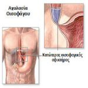
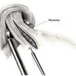

Η χειρουργική του ανώτερου πεπτικού έχει ως αντικείμενο τις παθήσεις του οισοφάγου και του στομάχου. Τα τελευταία χρόνια, με την εισαγωγή των λαπαροσκοπικών και ρομποτικών τεχνικών, η αντιμετώπιση των παθήσεων αυτών έχει γίνει ιδιαίτερα φιλική, ατραυματική και εύκολα ανεκτή από τους ασθενείς. Οι συχνότερες παθολογικές καταστάσεις του ανώτερου πεπτικού που απαιτούν χειρουργική θεραπεία είναι οι εξής:
Γαστροοισοφαγική παλινδρόμηση και διαφραγματοκήλη
Ως γαστροοισοφαγική παλινδρόμηση (ΓΟΠ) ορίζεται η κατάσταση κατά την οποία το περιεχόμενο του στομάχου παλινδρομεί στον οισοφάγο. Διαφραγματοκήλη ονομάζεται η είσοδος τμήματος του στομάχου στο θώρακα διαμέσων του οισοφαγικού τρήματος του διαφράγματος. Οι δύο αυτές καταστάσεις μπορεί να υπάρχουν ανεξάρτητα ή και ταυτόχρονα, προκαλώντας παρόμοια συμπτωματολογία, που περιλαμβάνει κυρίως όξυνες αναγωγές και αίσθημα οπισθοστερνικού άλγους και βάρους.
Στο κατώτερο τμήμα του οισοφάγου υπάρχει ένας σύνθετος μυώδης σχηματισμός, ο οποίος ονομάζεται Kατώτερος Oισοφαγικός Σφιγκτήρας (ΚΟΣ). Ο ΚΟΣ ενεργεί σαν μία μονόδρομη βαλβίδα, που επιτρέπει τη δίοδο των τροφών από τον οισοφάγο στο στομάχι και όχι αντίστροφα. Ο ΚΟΣ κλείνει αμέσως μετά την κατάποση, αποτρέποντας την παλινδρόμηση των υγρών του στομάχου, τα οποία έχουν πολύ χαμηλό PH και υψηλή περιεκτικότητα σε οξέα. Όταν υπάρχει ΓΟΠ ο ΚΟΣ δυσλειτουργεί, επιτρέποντας στο έντονα όξινο περιεχόμενο του στομάχου να παλινδρομήσει στον οισοφάγο, ο οποίος δεν είναι προστατευμένος από την οξύτητα, προκαλώντας οισοφαγίτιδα, στενώσεις, έλκη, αιμορραγία, δυσπλασία και σταδιακά κακοήθη εξαλλαγή και ανάπτυξη καρκίνου.
Η θεραπεία της γαστροοισοφαγικής παλινδρόμησης διακρίνεται σε συντηρητική και χειρουργική. Κατά τα αρχικά στάδια συστήνεται αλλαγή της διατροφής, απώλεια βάρους, μείωση του καπνίσματος και της κατανάλωσης του αλκοόλ, καθώς και κατάκλιση μετά από μερικές ώρες από το φαγητό. Συμπληρωματικά χορηγείται φαρμακευτική αγωγή για τη μείωση της ποσότητας των οξέων που παράγονται στο στόμαχο. Η χειρουργική αντιμετώπιση συστήνεται σε ασθενείς που, είτε δεν ανταποκρίνονται καλά στην συντηρητική αγωγή, είτε εμφανίζουν υποτροπιάζουσα συμπτωματολογία μετά τη διακοπή της φαρμακευτικής αγωγής. Η χειρουργική θεραπεία ονομάζεται θολοπλαστική, είναι ιδιαίτερα αποτελεσματική στη θεραπεία της ΓΟΠ και τεχνικά ταυτόσημη με τη χειρουργική θεραπεία της διαφραγματοκήλης.
ατά τη θολοπλαστική ανατάσσουμε και διορθώνουμε τη διαφραγματοκήλη, αν αυτή υπάρχει, συγκλείουμε με ράμματα το ευρύ οισοφαγικό τρήμα του διαφράγματος και δημιουργούμε νέα βαλβίδα στον κατώτερο οισοφάγο, τυλίγοντας το ανώτερο τμήμα του στομάχου γύρω από το κατώτερο τμήμα του οισοφάγου. Η τεχνική αυτή εκτελείται πλέον λαπαροσκοπικά και ρομποτικά, ενώ ανάλογα με τις μοίρες της περιστροφής του θόλου υπάρχουν διάφορες παραλλαγές, Nissen – Toupet κλπ.
Αχαλασία του οισοφάγου
Η αχαλασία του οισοφάγου είναι μια κινητική διαταραχή, κατά την οποία το κατώτερο τμήμα του οισοφάγου αδυνατεί να ολοκληρώσει τις περισταλτικές κινήσεις του για την προώθηση των τροφών προς το στόμαχο, ενώ ο κατώτερος οισοφαγικός σφιγκτήρας βρίσκεται σε μια κατάσταση διαρκούς σπασμού.
Τα συμπτώματα που συνήθως προκαλεί είναι:

- Δυσφαγία, όπου οι ασθενείς δυσκολεύονται να καταπιούν την τροφή και αισθάνονται ότι αυτή κολλά σε κάποιο σημείο του οισοφάγου.
- Αναγωγές, αφού οι τροφές δεν μπορούν να προωθηθούν προς το στομάχι συσσωρεύονται στον οισοφάγο και επιστρέφουν στο στόμα σαν μικρός έμετος. Όταν αυτό συμβαίνει και κατά τη διάρκεια του ύπνου, τότε λόγω της εισρόφησης δημιουργούνται πνευμονίες ή και πνευμονικά αποστήματα.
- Απώλεια βάρους, λόγω της κακής θρέψης και αδυναμία σίτισης.
Στα αρχικά στάδια της νόσου εφαρμόζεται η ενδοσκοπική θεραπεία, δηλαδή διαστολές που έχουν σκοπό να διευρύνουν τη διάμετρο του κατώτερου οισοφάγου. Η διάρκεια και η ποιότητα της ανακούφισης από τα συμπτώματα συνήθως δεν είναι ικανοποιητική. Τελευταία χρησιμοποιείται και η έγχυση τοξίνης της αλλαντιάσεως (botox), με αποτέλεσμα την παράλυση του σφιγκτήρα και τη βελτίωση της κατάποσης. Και εδώ όμως η αποτελεσματικότητα είναι ήπια και προσωρινή. Σε περιπτώσεις εντονότερης συμπτωματολογίας εφαρμόζεται η χειρουργική θεραπεία, που αποτελεί και την οριστική αντιμετώπιση της νόσου.

Η επέμβαση ονομάζεται λαπαροσκοπική μυοτομή κατά Heller, κατά την οποία διατέμνονται οι ίνες του κατωτέρου οισοφαγικού σφικτήρα, ενώ σε κάποιες περιπτώσεις συνοδεύεται από λαπαροσκοπική θολοπλαστική για την αποφυγή μιας επακόλουθης ΓΟΠ. Η μυοτομή κατά Heller θεωρείται ως επέμβαση εκλογής για τη νόσο, ενώ εφαρμόζεται είτε λαπαροσκοπικά, είτε ρομποτικά. Η ανακούφιση από τα συμπτώματα είναι άμεση και μόνιμη.
Οι λοιπές καλοήθεις παθήσεις του οισοφάγου και του στομάχου, όπως τα εκκολπώματα και τα λειομυώματα αντιμετωπίζονται κυρίως με λαπαροσκοπική ή και θωρακοσκοπική προσπέλαση. Το ίδιο ισχύει και για τις πολύ πρώιμες (in-situ) κακοήθεις παθήσεις. Αντίθετα, τα σχετικά προχωρημένα καρκινώματα του οισοφάγου και του στομάχου αντιμετωπίζονται πάντα με την ανοικτή χειρουργική, η οποία φαίνεται να υπερτερεί στις συγκεκριμένες παθήσεις.